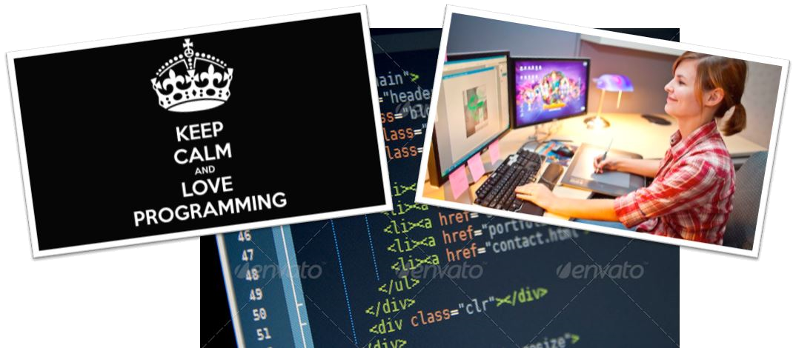

Informasjonsteknologi 1/2
Programfaget IT gir elevene grunnleggende ferdigheter
- Trening i kreativ tenkning og problemløsning
- Konstruere IT-løsninger til gitte problem
- Bruk av moderne teknologi:
-
tall, tekster, bilder, grafikk, film, lyd og animasjoner
IT er et realfag med stor vekt på utvikling av
tekniske og praktiske ferdigheter

-
IT1 er ikke et teoretisk realfag
-
Faget har element av teori, men legger størst vekt på tekniske og praktiske ferdigheter.
IT har også elementer fra samfunnsfag, formgiving og media